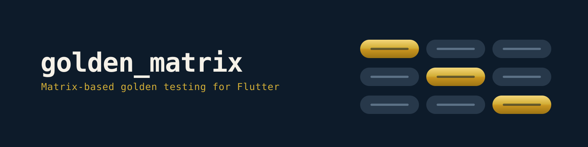

golden_matrix¶



Matrix-based visual regression testing for Flutter widgets and screens. Write one golden test declaration, run it across themes, locales, devices, text scales, and UI states.
The problem¶
Flutter golden tests check one specific case. When you add themes, locales, device sizes, and states, you get copy-paste and combinatorial explosion:
// Without golden_matrix: manual loops, boilerplate wrappers
for (final locale in supportedLocales) {
for (final device in devices) {
testGoldens('screen_${locale.languageCode}_${device.name}', (tester) async {
// 30+ lines of wrapper setup per combination...
});
}
}
The solution¶
// With golden_matrix: one declaration, full coverage
matrixGolden(
'PrimaryButton',
scenarios: [
MatrixScenario('default', builder: () => const PrimaryButton(label: 'OK')),
MatrixScenario('disabled', builder: () => const PrimaryButton(label: 'OK', enabled: false)),
],
axes: MatrixAxes(
themes: [MatrixTheme.light, MatrixTheme.dark],
locales: [Locale('en'), Locale('ar')],
textScales: [1.0, 2.0],
devices: [MatrixDevice.phoneSmall, MatrixDevice.phoneLarge],
),
);
// 2 scenarios × 2 themes × 2 locales × 2 scales × 2 devices = 32 golden files
Quick start¶
1. Add the dependency¶
2. Set up font loading¶
// test/flutter_test_config.dart
import 'dart:async';
import 'package:golden_matrix/golden_matrix.dart';
Future<void> testExecutable(FutureOr<void> Function() testMain) async {
await loadAppFonts();
return testMain();
}
Layout-deterministic tests
loadAppFonts(textFonts: false) loads only icon fonts and uses Ahem
placeholders for text, so text geometry is predictable across macOS/Linux
CI while icons still render with real glyphs. See Advanced.
3. Write your first matrix test¶
import 'package:flutter/widgets.dart';
import 'package:golden_matrix/golden_matrix.dart';
void main() {
matrixGolden(
'MyButton',
scenarios: [
MatrixScenario('default', builder: () => const MyButton(label: 'OK')),
MatrixScenario('disabled', builder: () => const MyButton(label: 'OK', enabled: false)),
],
axes: MatrixAxes(
themes: [MatrixTheme.light, MatrixTheme.dark],
devices: [MatrixDevice.phoneSmall, MatrixDevice.tablet],
),
);
}
4. Generate baselines and run¶
The three entry points¶
golden_matrix exposes three test functions — pick by the surface you're
capturing:
matrixGolden — component testing¶
Auto-wraps your widget in a MaterialApp with theme, locale, directionality,
text scale, and device configuration. Reach for it when the component needs a
Scaffold context (AppBar/FAB positioning, full device viewport).
matrixGolden(
'ProfileCard',
scenarios: [
MatrixScenario('loading', builder: () => const ProfileCard.loading()),
MatrixScenario('data', builder: () => ProfileCard(user: fakeUser)),
MatrixScenario('error', builder: () => const ProfileCard.error('Timeout')),
],
axes: MatrixAxes(
themes: [MatrixTheme.light, MatrixTheme.dark],
locales: [Locale('en'), Locale('ru'), Locale('ar')],
devices: [MatrixDevice.iphoneSE, MatrixDevice.tablet],
),
);
screenMatrixGolden — screen testing¶
You provide the full MaterialApp via appBuilder — for DI, navigation,
custom themes, full-screen flows.
screenMatrixGolden(
'LoginScreen',
appBuilder: (combination) => MaterialApp(
theme: combination.theme.resolve(),
locale: combination.locale,
home: LoginScreen(
errorMessage: combination.scenario.name == 'error' ? 'Invalid credentials' : null,
),
),
states: [
MatrixScenario('default', builder: () => const SizedBox.shrink()),
MatrixScenario('error', builder: () => const SizedBox.shrink()),
],
preset: MatrixPreset.screenSmoke,
);
componentMatrixGolden — intrinsic-size testing¶
For small visual primitives — buttons, badges, chips, list tiles — captured at
their natural size instead of a full device viewport. Keeps the full
MaterialApp context (theme, fonts, icons, locale, overlays); the PNG is
exactly widget-sized plus optional padding. The devices axis is ignored.
componentMatrixGolden(
'ShadButton',
scenarios: [
MatrixScenario('primary', builder: () => const ShadButton(child: Text('Click'))),
MatrixScenario('destructive', builder: () => const ShadButton.destructive(child: Text('Delete'))),
],
axes: const MatrixAxes(themes: [MatrixTheme.light, MatrixTheme.dark]),
);
What's in the box¶
- Declarative matrix — define axes (themes, locales, devices, text scales, directions), get all combinations automatically.
- Smart defaults —
MatrixAxes()with no arguments produces one valid test (light, en, 1.0x, phoneSmall). - RTL auto-inference — Arabic, Hebrew, Farsi automatically get RTL.
- Typed scenarios —
MatrixScenario.typed<T>attaches a compile-time-checked state payload so one builder covers all states. - Sampling —
full,smoke,pairwise,priorityBasedto keep CI fast. - 20+ device presets — modern iPhones, Android, foldables,
the full iPad lineup, plus
copyWith()and fully custom devices. - Reports — self-contained HTML with diff thumbnails, JSON, Markdown summary, and opt-in JUnit XML.
- Stale golden detection — flags orphan PNGs after renamed scenarios or dropped axes, no extra code.
- Overflow detection —
RenderFlex overflowand layout errors surface as report warnings. - DI-friendly —
wrapApp/wrapChildhooks forProviderScope,BlocProvider,MultiProvider. - Dry-run preview —
previewMatrixGolden(...)reports counts, paths, and collisions without rendering. - Zero external dependencies — only the Flutter SDK.
Explore the docs¶
- Sampling — strategies and presets to cut combination count
- Devices — preset table, custom devices,
copyWith - Reports — HTML/JSON/Markdown/JUnit, stale & overflow detection
- CI integration — GitHub Actions, JUnit dashboards, monorepos
- Advanced — rules, tolerance, DI hooks, post-pump state, theming
- Migration guide — from
golden_toolkit,alchemist, hand-rolled goldens
Requirements¶
- Flutter SDK >= 3.16.0
- Dart SDK >= 3.2.0
License¶
MIT